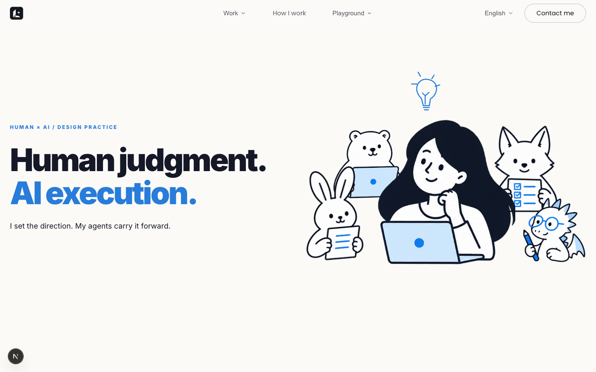
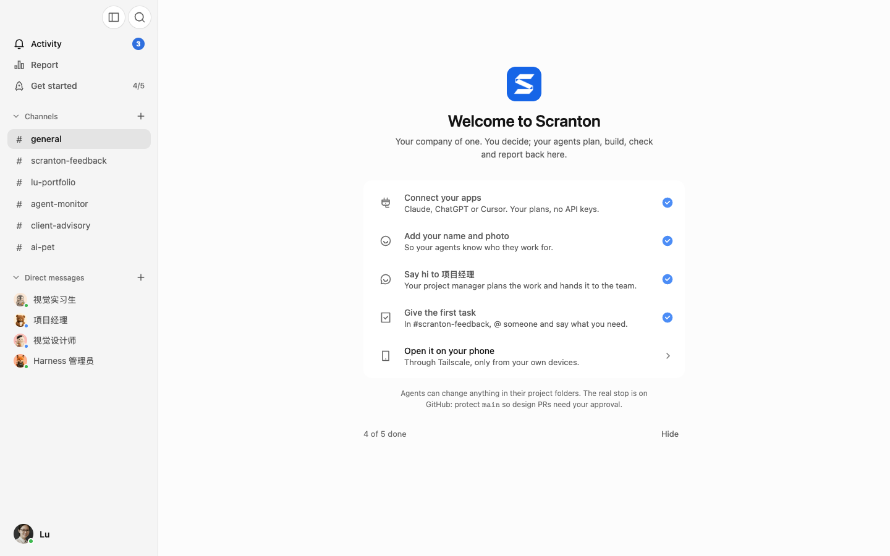

Agent Monitor
See the work in progress.
Agent Monitor, Scranton and Pixel Office.
A closer look at how I work with my agents.


See the work in progress.

Internal messages hiddenKeep the team in one conversation.

See the team share a space.